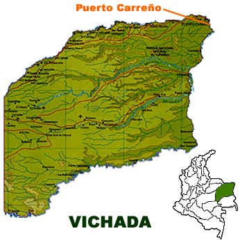

Vichada

Zonas Turísticas
- Parque Nacional Natural El Tuparro
Reserva con selvas, sabanas y el majestuoso Raudal de Maipures.
- Raudal de Maipures
Impresionante formación rocosa y rápidos en el río Orinoco.
- Río Orinoco
Ideal para navegación, pesca y avistamiento de delfines rosados.
- Cerros de Casuarito
Montañas de piedra con vistas panorámicas sobre la selva y el Orinoco.
- Reserva Natural Bojonawi
Espacio de conservación con rica biodiversidad amazónica.
- Laguna El Pañuelo
Bello cuerpo de agua rodeado de vegetación y fauna exótica.
Comida Típica
- Casabe
Pan delgado hecho de yuca, típico de las comunidades indígenas.
- Ajicero
Sopa picante con pescado, ají y especias locales.
- Carne en vara
Carne asada en estacas sobre brasas, acompañada de yuca.
- Farina
Harina de yuca utilizada en diferentes platos regionales.
- Pescado moqueado
Pescado secado al humo, tradicional en la región.
Sector Económico
- Ganadería
Principal actividad económica, con grandes extensiones de pastizales.
- Agricultura
Producción de yuca, plátano, maíz y frutas amazónicas.
- Pesca
Pesca artesanal en el Orinoco, con especies como pavón y bagre.
- Turismo
Potencial ecoturístico en reservas naturales y ríos.
- Comercio
Intercambio de productos con Venezuela y otras regiones colombianas.